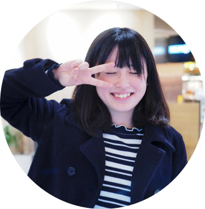

トップ
プロフィール
今後やりたいこと
作ったもの
周りの「声」を大切に、課題を解決に導き、 「面白い！」「あったらいいな！」を叶える。 そんなものづくりが出来ればと考えています。
"オオツカリコ"ってどんな人なの？

獨協大学法学部3年生。栃木県出身。パンが好きすぎて即死。
"オオツカリコ"のスキルセット
"オオツカリコ"がやりたいこと
文字がいっぱいでごめんなさい。 ある時ビズリーチさんでインターンをしていてデザイナーさんとお話する機会が多く、 その後未経験でデザイナーとして働くにつれてユーザー目線で考える面白さを知り課題を 解決できるものづくりがしたいと考えました。 また、唐突ですが今までのものづくり（記事を書いた時、作ったサイトを発信した時etc）原動力になったことがSNSで発信した時の「周りの声」でした。コメントをくれる人もいれば、いいね！を押してくれる人もいます。 そのような反響によって「見てくれている人が少しでもいるから頑張ろう」と思えたのですが、それだけだとどの場面で心打たれたのか？どの機能が使いやすかったか..とか詳しく分からなかったため、 デザインを作る時もどのように改善していけばよいか？戸惑った経験がありました。 なので、今度はCVやクリック数などの数字、ユーザーヒアリングなどを通してどどのような要素が見ている人に刺さるかを考え、ユーザーのあったらいいなを叶えたい。 そして、絵を書いている時もデザインをしている時もずっと大切にしてきた「面白い！」とか「こんなものあったんだ！」と新鮮な感情が湧き上がるような心踊るものづくりをしていきたいです。まる。
"オオツカリコ"が作ったもの